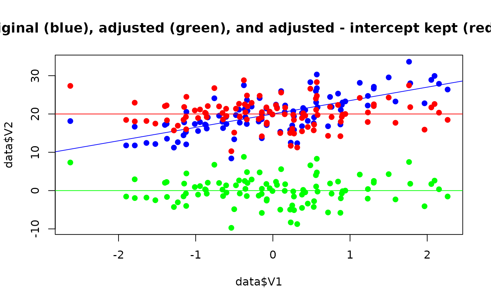

This function can be used to adjust the data for the effect of other variables present in the dataset. It is based on an underlying fitting of regressions models, allowing for quite some flexibility, such as including factors as random effects in mixed models (multilevel partialization), continuous variables as smooth terms in general additive models (non-linear partialization) and/or fitting these models under a Bayesian framework. The values returned by this function are the residuals of the regression models. Note that a regular correlation between two "adjusted" variables is equivalent to the partial correlation between them.
Usage
adjust(
data,
effect = NULL,
select = is.numeric,
exclude = NULL,
multilevel = FALSE,
additive = FALSE,
bayesian = FALSE,
keep_intercept = FALSE,
ignore_case = FALSE,
regex = FALSE,
verbose = FALSE
)
data_adjust(
data,
effect = NULL,
select = is.numeric,
exclude = NULL,
multilevel = FALSE,
additive = FALSE,
bayesian = FALSE,
keep_intercept = FALSE,
ignore_case = FALSE,
regex = FALSE,
verbose = FALSE
)Arguments
- data
A data frame.
- effect
Character vector of column names to be adjusted for (regressed out). If
NULL(the default), all variables will be selected.- select
Variables that will be included when performing the required tasks. Can be either
a variable specified as a literal variable name (e.g.,
column_name),a string with the variable name (e.g.,
"column_name"), a character vector of variable names (e.g.,c("col1", "col2", "col3")), or a character vector of variable names including ranges specified via:(e.g.,c("col1:col3", "col5")),for some functions, like
data_select()ordata_rename(),selectcan be a named character vector. In this case, the names are used to rename the columns in the output data frame. See 'Details' in the related functions to see where this option applies.a formula with variable names (e.g.,
~column_1 + column_2),a vector of positive integers, giving the positions counting from the left (e.g.
1orc(1, 3, 5)),a vector of negative integers, giving the positions counting from the right (e.g.,
-1or-1:-3),one of the following select-helpers:
starts_with(),ends_with(),contains(), a range using:, orregex().starts_with(),ends_with(), andcontains()accept several patterns, e.gstarts_with("Sep", "Petal").regex()can be used to define regular expression patterns.a function testing for logical conditions, e.g.
is.numeric()(oris.numeric), or any user-defined function that selects the variables for which the function returnsTRUE(like:foo <- function(x) mean(x) > 3),ranges specified via literal variable names, select-helpers (except
regex()) and (user-defined) functions can be negated, i.e. return non-matching elements, when prefixed with a-, e.g.-ends_with(),-is.numericor-(Sepal.Width:Petal.Length). Note: Negation means that matches are excluded, and thus, theexcludeargument can be used alternatively. For instance,select=-ends_with("Length")(with-) is equivalent toexclude=ends_with("Length")(no-). In case negation should not work as expected, use theexcludeargument instead.
If
NULL, selects all columns. Patterns that found no matches are silently ignored, e.g.extract_column_names(iris, select = c("Species", "Test"))will just return"Species".- exclude
See
select, however, column names matched by the pattern fromexcludewill be excluded instead of selected. IfNULL(the default), excludes no columns.- multilevel
If
TRUE, the factors are included as random factors. Else, ifFALSE(default), they are included as fixed effects in the simple regression model.- additive
If
TRUE, continuous variables as included as smooth terms in additive models. The goal is to regress-out potential non-linear effects.- bayesian
If
TRUE, the models are fitted under the Bayesian framework usingrstanarm.- keep_intercept
If
FALSE(default), the intercept of the model is re-added. This avoids the centering around 0 that happens by default when regressing out another variable (see the examples below for a visual representation of this).- ignore_case
Logical, if
TRUEand when one of the select-helpers or a regular expression is used inselect, ignores lower/upper case in the search pattern when matching against variable names.- regex
Logical, if
TRUE, the search pattern fromselectwill be treated as regular expression. Whenregex = TRUE, select must be a character string (or a variable containing a character string) and is not allowed to be one of the supported select-helpers or a character vector of length > 1.regex = TRUEis comparable to using one of the two select-helpers,select = contains()orselect = regex(), however, since the select-helpers may not work when called from inside other functions (see 'Details'), this argument may be used as workaround.- verbose
Toggle warnings.
Examples
adjusted_all <- adjust(attitude)
head(adjusted_all)
#> rating complaints privileges learning raises critical
#> 1 -8.1102953 5.5583770 -15.848949 -2.75102306 0.5742664 15.605502
#> 2 1.6472337 0.0646564 -1.422592 -3.06207012 -1.5567655 -2.315781
#> 3 1.0605589 -7.5116953 11.174609 5.59808033 4.8603132 8.061801
#> 4 -0.2268416 3.8345277 -4.567441 0.03866933 -7.1185324 13.002574
#> 5 6.5462010 -1.2420122 -3.051098 0.87312095 -2.7131349 6.500353
#> 6 -10.9418499 5.2030745 2.664156 -1.24552098 4.1370346 -21.678382
#> advance
#> 1 2.8684130
#> 2 5.3937097
#> 3 -6.4236221
#> 4 -0.3951046
#> 5 2.1988621
#> 6 -3.1912418
adjusted_one <- adjust(attitude, effect = "complaints", select = "rating")
head(adjusted_one)
#> rating complaints privileges learning raises critical advance
#> 1 -9.8614202 51 30 39 61 92 45
#> 2 0.3286522 64 51 54 63 73 47
#> 3 3.8009933 70 68 69 76 86 48
#> 4 -0.9167380 63 45 47 54 84 35
#> 5 7.7641147 78 56 66 71 83 47
#> 6 -12.8798594 55 49 44 54 49 34
# \donttest{
adjust(attitude, effect = "complaints", select = "rating", bayesian = TRUE)
#> rating complaints privileges learning raises critical advance
#> 1 -9.85743877 51 30 39 61 92 45
#> 2 0.34818773 64 51 54 63 73 47
#> 3 3.82770765 70 68 69 76 86 48
#> 4 -0.89839893 63 45 47 54 84 35
#> 5 7.80040088 78 56 66 71 83 47
#> 6 -12.87109216 55 49 44 54 49 34
#> 7 -6.91205231 67 42 56 66 68 35
#> 8 0.06064092 75 50 55 70 66 41
#> 9 -4.21325250 82 72 67 71 83 31
#> 10 6.60842777 61 45 47 62 80 41
#> 11 9.63573453 53 53 58 58 67 34
#> 12 7.36184111 60 47 39 59 74 41
#> 13 7.85501442 62 57 42 55 63 25
#> 14 -8.96666585 83 83 45 59 77 35
#> 15 4.55381423 77 54 72 79 77 46
#> 16 -1.24055927 90 50 72 60 54 36
#> 17 -4.47349254 85 64 69 79 79 63
#> 18 5.36184111 60 65 75 55 80 60
#> 19 -2.17229235 70 46 57 75 85 46
#> 20 -8.13133220 58 68 54 64 78 52
#> 21 5.43010803 40 33 34 43 64 33
#> 22 3.60842777 61 52 62 66 80 41
#> 23 -11.15863897 66 52 50 63 80 37
#> 24 -2.30965193 37 42 58 50 57 49
#> 25 7.88232119 54 42 48 66 75 33
#> 26 -6.44618577 77 66 63 88 76 72
#> 27 7.06064092 75 58 74 80 78 49
#> 28 -9.37791885 57 44 45 51 83 38
#> 29 6.52650746 85 71 71 77 74 55
#> 30 5.78674750 82 39 59 64 78 39
adjust(attitude, effect = "complaints", select = "rating", additive = TRUE)
#> rating complaints privileges learning raises critical advance
#> 1 -9.86142016 51 30 39 61 92 45
#> 2 0.32865220 64 51 54 63 73 47
#> 3 3.80099328 70 68 69 76 86 48
#> 4 -0.91673799 63 45 47 54 84 35
#> 5 7.76411473 78 56 66 71 83 47
#> 6 -12.87985944 55 49 44 54 49 34
#> 7 -6.93517726 67 42 56 66 68 35
#> 8 0.02794419 75 50 55 70 66 41
#> 9 -4.25432454 82 72 67 71 83 31
#> 10 6.59248165 61 45 47 62 80 41
#> 11 9.62936020 53 53 58 58 67 34
#> 12 7.34709147 60 47 39 59 74 41
#> 13 7.83787183 62 57 42 55 63 25
#> 14 -9.00893436 83 83 45 59 77 35
#> 15 4.51872455 77 54 72 79 77 46
#> 16 -1.29120309 90 50 72 60 54 36
#> 17 -4.51815400 85 64 69 79 79 63
#> 18 5.34709147 60 65 75 55 80 60
#> 19 -2.19900672 70 46 57 75 85 46
#> 20 -8.14368889 58 68 54 64 78 52
#> 21 5.43928784 40 33 34 43 64 33
#> 22 3.59248165 61 52 62 66 80 41
#> 23 -11.18056744 66 52 50 63 80 37
#> 24 -2.29688270 37 42 58 50 57 49
#> 25 7.87475038 54 42 48 66 75 33
#> 26 -6.48127545 77 66 63 88 76 72
#> 27 7.02794419 75 58 74 80 78 49
#> 28 -9.38907907 57 44 45 51 83 38
#> 29 6.48184600 85 71 71 77 74 55
#> 30 5.74567546 82 39 59 64 78 39
attitude$complaints_LMH <- cut(attitude$complaints, 3)
adjust(attitude, effect = "complaints_LMH", select = "rating", multilevel = TRUE)
#> rating complaints privileges learning raises critical advance
#> 1 -9.9809282 51 30 39 61 92 45
#> 2 2.6250549 64 51 54 63 73 47
#> 3 10.6250549 70 68 69 76 86 48
#> 4 0.6250549 63 45 47 54 84 35
#> 5 5.6503521 78 56 66 71 83 47
#> 6 -17.3749451 55 49 44 54 49 34
#> 7 -2.3749451 67 42 56 66 68 35
#> 8 -4.3496479 75 50 55 70 66 41
#> 9 -3.3496479 82 72 67 71 83 31
#> 10 6.6250549 61 45 47 62 80 41
#> 11 11.0190718 53 53 58 58 67 34
#> 12 6.6250549 60 47 39 59 74 41
#> 13 8.6250549 62 57 42 55 63 25
#> 14 -7.3496479 83 83 45 59 77 35
#> 15 1.6503521 77 54 72 79 77 46
#> 16 5.6503521 90 50 72 60 54 36
#> 17 -1.3496479 85 64 69 79 79 63
#> 18 4.6250549 60 65 75 55 80 60
#> 19 4.6250549 70 46 57 75 85 46
#> 20 -10.3749451 58 68 54 64 78 52
#> 21 -2.9809282 40 33 34 43 64 33
#> 22 3.6250549 61 52 62 66 80 41
#> 23 -7.3749451 66 52 50 63 80 37
#> 24 -12.9809282 37 42 58 50 57 49
#> 25 10.0190718 54 42 48 66 75 33
#> 26 -9.3496479 77 66 63 88 76 72
#> 27 2.6503521 75 58 74 80 78 49
#> 28 -12.3749451 57 44 45 51 83 38
#> 29 9.6503521 85 71 71 77 74 55
#> 30 6.6503521 82 39 59 64 78 39
#> complaints_LMH
#> 1 (36.9,54.7]
#> 2 (54.7,72.3]
#> 3 (54.7,72.3]
#> 4 (54.7,72.3]
#> 5 (72.3,90.1]
#> 6 (54.7,72.3]
#> 7 (54.7,72.3]
#> 8 (72.3,90.1]
#> 9 (72.3,90.1]
#> 10 (54.7,72.3]
#> 11 (36.9,54.7]
#> 12 (54.7,72.3]
#> 13 (54.7,72.3]
#> 14 (72.3,90.1]
#> 15 (72.3,90.1]
#> 16 (72.3,90.1]
#> 17 (72.3,90.1]
#> 18 (54.7,72.3]
#> 19 (54.7,72.3]
#> 20 (54.7,72.3]
#> 21 (36.9,54.7]
#> 22 (54.7,72.3]
#> 23 (54.7,72.3]
#> 24 (36.9,54.7]
#> 25 (36.9,54.7]
#> 26 (72.3,90.1]
#> 27 (72.3,90.1]
#> 28 (54.7,72.3]
#> 29 (72.3,90.1]
#> 30 (72.3,90.1]
# }
# Generate data
data <- bayestestR::simulate_correlation(n = 100, r = 0.7)
data$V2 <- (5 * data$V2) + 20 # Add intercept
# Adjust
adjusted <- adjust(data, effect = "V1", select = "V2")
adjusted_icpt <- adjust(data, effect = "V1", select = "V2", keep_intercept = TRUE)
# Visualize
plot(
data$V1, data$V2,
pch = 19, col = "blue",
ylim = c(min(adjusted$V2), max(data$V2)),
main = "Original (blue), adjusted (green), and adjusted - intercept kept (red) data"
)
abline(lm(V2 ~ V1, data = data), col = "blue")
points(adjusted$V1, adjusted$V2, pch = 19, col = "green")
abline(lm(V2 ~ V1, data = adjusted), col = "green")
points(adjusted_icpt$V1, adjusted_icpt$V2, pch = 19, col = "red")
abline(lm(V2 ~ V1, data = adjusted_icpt), col = "red")
